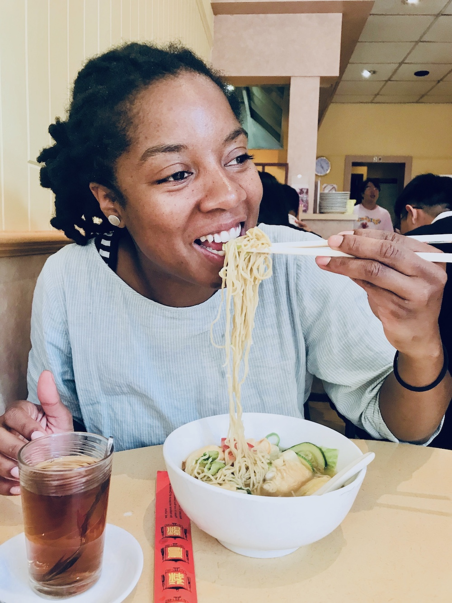

Hoi, ik ben Jade
een freelancer die video's en podcasts maakt.

Ik houd van verhalen maken.
Momenteel werk ik halftijds als communicatiemedewerker voor Kif Kif vzw. De andere helft van mijn werkweek ben ik aan de slag als freelance video- en podcastmaker. Ik maak ook deel uit van freelance collectief I Like Media. Daar geef ik trainingen over storytelling, video’s en podcasts.
Mijn missie is verhalen te maken (en verspreiden) die nog veel te weinig worden gehoord. Ik laat mensen graag reflecteren over zaken die er toe doen.